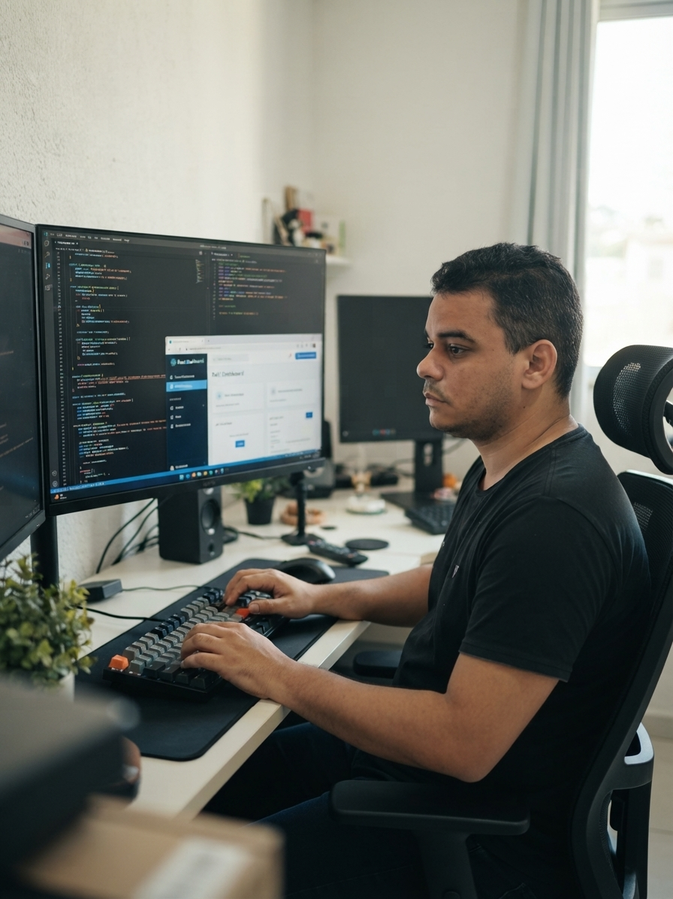

Sobre mim

Profissional com experiencia em Manutenção e Redes de computadores. Estudante e entusiasta em linguagens de programação como: Java, Python, C++ (utilizado em arduino e ESP32).
Habilidades Técnicas
HTML5 Semântico
CSS3 / Flexbox / Grid
Python
Node.js
Git / Github
Formação Acadêmica
| Instituição | Curso / Grau | Ano de Conclusão |
|---|---|---|
| Instituto Federal de Educação, Ciência e Tecnologia de Pernambuco - Campus Palmares | Curso Técnico em Suporte e Manutenção de Computadores | 2017 |
| Instituto Federal de Educação, Ciência e Tecnologia de Pernambuco - Campus Palmares | Curso Técnico em Redes de Computadores | 2019 |
| Instituto Federal de Educação, Ciência e Tecnologia de Pernambuco - Campus Palmares | Análise e Desenvolvimento de Sistemas | 2028 (previsão) |